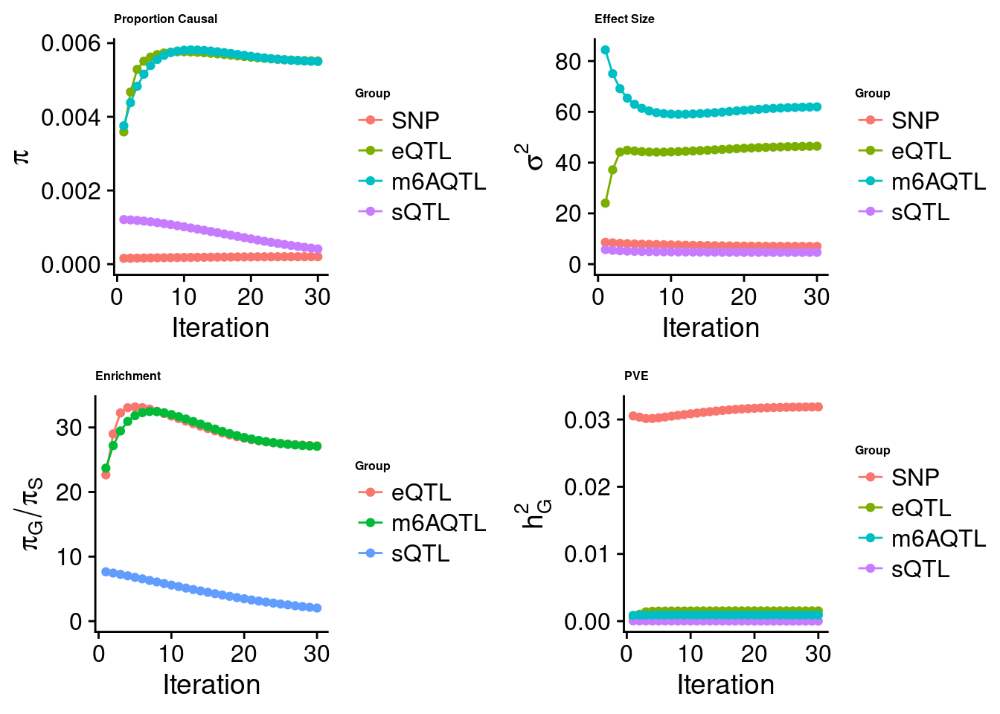

Last updated: 2023-08-22
Checks: 6 1
Knit directory: m6A_in_disease_genetics/
This reproducible R Markdown analysis was created with workflowr (version 1.7.0). The Checks tab describes the reproducibility checks that were applied when the results were created. The Past versions tab lists the development history.
Great! Since the R Markdown file has been committed to the Git repository, you know the exact version of the code that produced these results.
Great job! The global environment was empty. Objects defined in the global environment can affect the analysis in your R Markdown file in unknown ways. For reproduciblity it’s best to always run the code in an empty environment.
The command set.seed(20230331) was run prior to running
the code in the R Markdown file. Setting a seed ensures that any results
that rely on randomness, e.g. subsampling or permutations, are
reproducible.
Great job! Recording the operating system, R version, and package versions is critical for reproducibility.
Nice! There were no cached chunks for this analysis, so you can be confident that you successfully produced the results during this run.
Using absolute paths to the files within your workflowr project makes it difficult for you and others to run your code on a different machine. Change the absolute path(s) below to the suggested relative path(s) to make your code more reproducible.
| absolute | relative |
|---|---|
| ~/projects/m6A_in_disease_genetics/code/ctwas/ctwas_config_b37.R | code/ctwas/ctwas_config_b37.R |
| ~/projects/m6A_in_disease_genetics/code/ctwas/qiansheng/locus_plot.R | code/ctwas/qiansheng/locus_plot.R |
Great! You are using Git for version control. Tracking code development and connecting the code version to the results is critical for reproducibility.
The results in this page were generated with repository version 688d15c. See the Past versions tab to see a history of the changes made to the R Markdown and HTML files.
Note that you need to be careful to ensure that all relevant files for
the analysis have been committed to Git prior to generating the results
(you can use wflow_publish or
wflow_git_commit). workflowr only checks the R Markdown
file, but you know if there are other scripts or data files that it
depends on. Below is the status of the Git repository when the results
were generated:
Ignored files:
Ignored: .ipynb_checkpoints/
Ignored: analysis/m6A_switch_to_disease_h2g.nb.html
Ignored: data/plots/
Untracked files:
Untracked: HMGCR_locus_gene_tracks.pdf
Untracked: Rplots.pdf
Untracked: analysis/.ipynb_checkpoints/
Untracked: analysis/IBD_E_S_m6A.Rmd
Untracked: analysis/IBD_E_S_m6A_output.Rmd
Untracked: analysis/LDL_E_S_m6A.Rmd
Untracked: analysis/LDL_m6A_output.Rmd
Untracked: analysis/RA_m6A_output.Rmd
Untracked: analysis/WhiteBlood_WholeBlood_E_M.Rmd
Untracked: analysis/identify_m6A_mechanisms_with_finemapping.Rmd
Untracked: analysis/lymph_m6A_output.Rmd
Untracked: analysis/pre_weights_m6AQTL.txt
Untracked: analysis/rbc_E_S_m6A_output.Rmd
Untracked: analysis/rbc_m6A_output.Rmd
Untracked: analysis/summarize_ctwas_m6A_results.Rmd
Untracked: analysis/wbc_E_S_m6A_output.Rmd
Untracked: code/.ipynb_checkpoints/
Untracked: code/all_m6a_sites_with_paired_cisNATs_summary.csv
Untracked: code/annotating_fine-mapped_m6A_QTLs.Rmd
Untracked: code/check_double_strand.ipynb
Untracked: code/check_double_strand_v2.ipynb
Untracked: code/ctwas/
Untracked: code/figure/
Untracked: code/learn_gviz.Rmd
Untracked: code/learn_gviz.html
Untracked: code/learn_gviz.nb.html
Untracked: code/m6AQTL_finemapping.Rmd
Untracked: code/plot_genomic_tracks_gviz.ipynb
Untracked: code/summary_TWAS_coloc_m6A_2023.Rmd
Untracked: code/test_gviz.ipynb
Untracked: code/twas_genes_PP4_0.3_immune_traits_trackplots.pdf
Untracked: data/.ipynb_checkpoints/
Untracked: data/ADCY7_gwas_input.tsv
Untracked: data/ADCY7_qtl_input.tsv
Untracked: data/Allergy_full_coloc.txt
Untracked: data/Asthma_full_coloc.txt
Untracked: data/CAD_full_coloc.txt
Untracked: data/Eosinophil_count_full_coloc.txt
Untracked: data/GSE125377_jointPeakReadCount.txt
Untracked: data/G_list.Rd
Untracked: data/HMGCR_ctwas_dat.Rd
Untracked: data/IBD_full_coloc.txt
Untracked: data/JointPeaks.bed
Untracked: data/Li2022_dsRNAs.xlsx
Untracked: data/Lupus_full_coloc.txt
Untracked: data/RA_full_coloc.txt
Untracked: data/TABLE1_hg19.txt
Untracked: data/TABLE1_hg19.txt.zip
Untracked: data/__MACOSX/
Untracked: data/coloc_blood_traits.csv
Untracked: data/crohns_disease_full_coloc.txt
Untracked: data/ctwas_m6a_joint_top_PIP.txt
Untracked: data/edit_sites_and_GE_neg_correlated.txt
Untracked: data/edit_sites_and_GE_pos_correlated.txt
Untracked: data/features
Untracked: data/human_EERs.csv
Untracked: data/human_EERs.txt
Untracked: data/lymph_full_coloc.txt
Untracked: data/m6A_TWAS_results.csv
Untracked: data/m6a_TWAS_genes.txt
Untracked: data/m6a_joint_calling_peaks.csv
Untracked: data/nasser_2021_ABC_IBD_genes.txt
Untracked: data/nat_sense_pairs.csv
Untracked: data/plt_full_coloc.txt
Untracked: data/rbc_full_coloc.txt
Untracked: data/rdw_full_coloc.txt
Untracked: data/reported_AS_targets_S1.txt
Untracked: data/reported_AS_wanowska.txt
Untracked: data/sig_coloc_results/
Untracked: data/test_locuscomparer.pdf
Untracked: data/ulcerative_colitis_full_coloc.txt
Untracked: data/wbc_full_coloc.txt
Untracked: data/zhao_silver_genes.csv
Untracked: output/.ipynb_checkpoints/
Untracked: output/HMGCR_gene_track_plot.pdf
Untracked: output/HMGCR_locus_plot.pdf
Untracked: output/IBD_DHX38_plot.pdf
Untracked: output/IBD_DHX38_plot_genetrack.pdf
Untracked: output/all_m6a_sites_with_cisNATs.csv
Untracked: output/all_m6a_sites_with_paired_cisNATs_summary.csv
Untracked: output/all_m6a_sites_with_paired_cisNATs_summary_PP40.3.csv
Untracked: output/all_m6a_sites_with_paired_cisNATs_summary_PP40.5.csv
Untracked: output/all_m6a_sites_with_paired_cis_NATs.csv
Untracked: output/fine_mapped_m6AQTLs_TWAS_genes_highPP4.rds
Untracked: output/gene_summary.csv
Untracked: output/immune_related_m6A_targets.csv
Untracked: output/lupus_MIR210HG_plot.pdf
Untracked: output/lupus_MIR210HG_plot_genetrack.pdf
Untracked: output/m6aQTL_dsRNAs_PPP2R3C_PRORP.pdf
Untracked: output/m6a_QTL_genes.csv
Untracked: output/m6a_genes_PIP_0.6_blood_immune.csv
Untracked: output/m6a_genes_PIP_0.6_blood_immune.txt
Untracked: output/m6a_peaks_nearby_dsRNAs.csv
Untracked: output/m6a_sites_near_all_dsRNAs_twas.csv
Untracked: output/m6a_sites_near_dsRNAs_coloc.csv
Untracked: output/m6a_sites_near_dsRNAs_twas.csv
Untracked: output/m6a_sites_near_dsRNAs_twas_summary.csv
Untracked: output/m6a_sites_overlapping_NAT_twas.csv
Untracked: output/m6a_sites_overlapping_dsRNAs_coloc.csv
Untracked: output/m6a_sites_overlapping_dsRNAs_twas.csv
Untracked: output/m6a_sites_overlapping_dsRegions.csv
Untracked: output/m6a_sites_overlapping_dsRegions_coloc.csv
Untracked: output/negatively_correlated_genes.txt
Untracked: output/postively_correlated_genes.txt
Untracked: output/rs1806261_RABEP1-NUP88_focused_locusview.pdf
Untracked: output/rs1806261_RABEP1-NUP88_locusview.pdf
Untracked: output/rs3177647_MAPKAPK5-AS1-MAPKAPK5_locusview.pdf
Untracked: output/rs3204541_DDX55-EIF2B1_locusview.pdf
Untracked: output/rs7184802_ADCY7-BRD7_locusview.pdf
Untracked: output/rs7184802_ADCY7_locuscompare.pdf
Untracked: output/twas_genes_PP4_0.3_immune_traits_trackplots.pdf
Untracked: output/twas_genes_PP4_0.5_blood_traits_trackplots.pdf
Untracked: output/twas_m6a_sites_with_all_cisNATs.RDS
Untracked: output/twas_m6a_sites_with_cisNATs_range.RDS
Untracked: output/twas_m6a_sites_with_the_nearest_cisNAT.RDS
Untracked: twas_genes_PP4_0.3_immune_traits_trackplots.pdf
Unstaged changes:
Deleted: analysis/learn_ctwas.Rmd
Modified: analysis/lymph_m6A_output_hg19.Rmd
Modified: analysis/m6A_switch_to_disease_h2g.Rmd
Modified: analysis/rbc_m6A_output_hg19.Rmd
Modified: analysis/wbc_m6A_output.Rmd
Modified: analysis/wbc_m6A_output_hg19.Rmd
Note that any generated files, e.g. HTML, png, CSS, etc., are not included in this status report because it is ok for generated content to have uncommitted changes.
These are the previous versions of the repository in which changes were
made to the R Markdown
(analysis/asthma_m6A_output_hg19.Rmd) and HTML
(docs/asthma_m6A_output_hg19.html) files. If you’ve
configured a remote Git repository (see ?wflow_git_remote),
click on the hyperlinks in the table below to view the files as they
were in that past version.
| File | Version | Author | Date | Message |
|---|---|---|---|---|
| Rmd | 688d15c | Jing Gu | 2023-08-22 | immune traits |
# top 1 method
res <- impute_expr_z(z_snp, weight = weight, ld_R_dir = ld_R_dir,
method = NULL, outputdir = outputdir, outname = outname.e,
harmonize_z = T, harmonize_wgt = T, scale_by_ld_variance=F,
strand_ambig_action_z = "recover",
recover_strand_ambig_wgt = T
# lasso/elastic-net method
res <- impute_expr_z(z_snp, weight = weight, ld_R_dir = ld_R_dir,
method = NULL, outputdir = outputdir, outname = outname.e,
harmonize_z = T, harmonize_wgt = T, scale_by_ld_variance=F,
strand_ambig_action_z = "none",
recover_strand_ambig_wgt = FGWAS: UK Biobank GWAS summary statistics - European individuals
Weights: FUSION weights using top1, lasso, or elastic-net models were converted into PredictDB format and were not needed to do scaling when running ctwas.
cTWAS analysis on m6A alone
Joint analysis of expression, splicing and m6A
[1] "Check convergence for the lasso model when jointly analyzing expression, splicing and m6A:"
[1] "Table of group size before/after matching with UKBB SNPs:"
SNP eQTL sQTL m6AQTL
prior_group_size 9.324e+06 2005.0000 2191.000 918.0000
group_size 8.713e+06 1998.0000 2180.000 912.0000
percent_of_overlaps 9.345e-01 0.9965 0.995 0.9935
SNP eQTL sQTL m6AQTL
estimated_group_prior 1.965e-04 0.005196 0.015474 0.020449
estimated_group_prior_var 3.621e+01 52.195130 31.455925 48.887256
estimated_group_pve 1.769e-01 0.001546 0.003028 0.002601
attributable_group_pve 9.610e-01 0.008398 0.016445 0.014130$lasso
top1 model
Summing up PIPs for m6A peaks located in the same gene
Top m6A PIPs by genes
For m6A or splicing QTLs, they are assigned to the nearest genes (m6A needs to be confirmed with Kevin).
Top SNPs or genes with PIP > 0.6
$eQTL
genename susie_pip group region_tag
1967 ZNF132 0.9859 eQTL 19_39
1806 MMACHC 0.9699 eQTL 1_29
1954 DNASE2 0.7971 eQTL 19_10
979 TRIM5 0.7582 eQTL 11_4
1831 WRNIP1 0.6198 eQTL 6_3
$m6AQTL
genename susie_pip group region_tag
5051 C17orf62 0.9632 m6AQTL 17_47
5021 SLC25A11 0.9579 m6AQTL 17_5
5088 UBE2G2 0.9184 m6AQTL 21_23
4984 THEMIS2 0.9180 m6AQTL 1_19
5008 TRAF2 0.8983 m6AQTL 9_74
5043 TAOK1 0.8696 m6AQTL 17_18
5019 PHF11 0.8610 m6AQTL 13_21
5075 AKAP8 0.8485 m6AQTL 19_12
5003 ZSCAN25 0.8295 m6AQTL 7_61
4993 PLXNA1 0.7925 m6AQTL 3_79
4534 GSDMD 0.7594 m6AQTL 8_94
5009 QSER1 0.6970 m6AQTL 11_22
4617 CD151 0.6313 m6AQTL 11_1
4995 AFF1 0.6087 m6AQTL 4_59
$sQTL
genename susie_pip group region_tag
4173 ABHD12 0.9999 sQTL 20_19
4113 TOP3A 0.9998 sQTL 17_15
4004 ATIC 0.8582 sQTL 2_127
4017 FYTTD1 0.8315 sQTL 3_122
2406 USP4 0.7884 sQTL 3_35
3609 CWC25 0.7309 sQTL 17_23
3050 CWF19L1 0.7192 sQTL 10_64
2486 OCIAD2 0.6824 sQTL 4_38
4011 GSK3B 0.6606 sQTL 3_74
3617 HDAC5 0.6494 sQTL 17_26
2992 RPL12 0.6465 sQTL 9_66
3111 SAAL1 0.6340 sQTL 11_13 genename region_tag susie_pip z
1 C17orf62 17_47 0.9632 5.066
2 SLC25A11 17_5 0.9579 -15.751
3 UBE2G2 21_23 0.9184 -4.584
4 THEMIS2 1_19 0.9180 8.682
5 TRAF2 9_74 0.8983 -4.373
6 TAOK1 17_18 0.8696 -29.517
7 PHF11 13_21 0.8610 -5.372
8 AKAP8 19_12 0.8485 -5.185
9 ZSCAN25 7_61 0.8295 -5.164
10 PLXNA1 3_79 0.7925 -5.597Summing up PIPs for m6A peaks located in the same gene
Top 10 m6A PIPs by genes
# A tibble: 819 × 2
genename total_susie_pip
<chr> <dbl>
1 C17orf62 0.963
2 SLC25A11 0.958
3 UBE2G2 0.918
4 THEMIS2 0.918
5 TRAF2 0.898
6 TAOK1 0.870
7 PHF11 0.861
8 AKAP8 0.849
9 ZSCAN25 0.829
10 GSDMD 0.818
# ℹ 809 more rows peak_id genename pos region_tag susie_pip z
1 chr20:25275666-25282855 ABHD12 25260931 20_19 0.9999 5.559
2 chr17:18188834-18193814 TOP3A 18095978 17_15 0.9998 -6.421
3 chr2:216213972-216224011 ATIC 216116915 2_127 0.8582 -3.866
4 chr3:197495458-197495689 FYTTD1 197441584 3_122 0.8315 4.156
5 chr3:49339975-49348053 USP4 49255503 3_35 0.7884 4.115
6 chr17:36959114-36963018 CWC25 36957432 17_23 0.7309 -4.441
7 chr10:102012941-102013178 CWF19L1 101937969 10_64 0.7192 -5.782
8 chr4:48887582-48896023 OCIAD2 48843230 4_38 0.6824 5.587
9 chr3:119582452-119624602 GSK3B 119503971 3_74 0.6606 4.097
10 chr17:42162523-42163940 HDAC5 42083840 17_26 0.6494 5.985Summing up PIPs for spliced introns located in the same gene
Top 10 splicing PIPs by genes
# A tibble: 10 × 2
genename total_susie_pip
<chr> <dbl>
1 HNRNPK 1.09
2 ABHD12 1.00
3 TOP3A 1.00
4 MAN2C1 0.893
5 ATIC 0.887
6 FYTTD1 0.832
7 USP4 0.788
8 INO80B-WBP1 0.787
9 OS9 0.772
10 STYXL1 0.748 genename combined_pip expression_pip splicing_pip m6A_pip region_tag
1518 HNRNPK 1.136 0.0000000 1.0874414 0.048709 9_41
3059 TOP3A 1.002 0.0003334 0.9998311 0.001439 17_15
14 ABHD12 1.000 0.0000000 0.9999456 0.000000 20_19
3323 ZNF132 0.986 0.9858564 0.0000000 0.000000 19_39
1863 MMACHC 0.970 0.9699293 0.0000000 0.000000 1_29
354 C17orf62 0.963 0.0000000 0.0000000 0.963176 17_47
2703 SLC25A11 0.958 0.0000000 0.0000000 0.957935 17_5
2962 THEMIS2 0.918 0.0000000 0.0000000 0.917981 1_19
3166 UBE2G2 0.918 0.0000000 0.0000000 0.918412 21_23
3074 TRAF2 0.898 0.0000000 0.0000000 0.898278 9_74
1757 MAN2C1 0.893 0.0000000 0.8925246 0.000000 15_35
239 ATIC 0.887 0.0000000 0.8868402 0.000000 2_127
2908 TAOK1 0.870 0.0000000 0.0000000 0.869561 17_18
2208 PHF11 0.862 0.0000000 0.0005345 0.861005 13_21
111 AKAP8 0.849 0.0000000 0.0000000 0.848503 19_12
1355 FYTTD1 0.832 0.0000000 0.8315149 0.000000 3_122
3095 TRIM5 0.832 0.7581670 0.0736236 0.000000 11_4
3397 ZSCAN25 0.829 0.0000000 0.0000000 0.829473 7_61
1437 GSDMD 0.823 0.0042699 0.0000000 0.818362 8_94
1581 INO80B-WBP1 0.804 0.0000000 0.7870720 0.017100 2_48Loading required package: gridWarning: replacing previous import 'utils::download.file' by
'restfulr::download.file' when loading 'rtracklayer'
R version 4.2.0 (2022-04-22)
Platform: x86_64-pc-linux-gnu (64-bit)
Running under: CentOS Linux 7 (Core)
Matrix products: default
BLAS/LAPACK: /software/openblas-0.3.13-el7-x86_64/lib/libopenblas_haswellp-r0.3.13.so
locale:
[1] LC_CTYPE=en_US.UTF-8 LC_NUMERIC=C LC_TIME=C
[4] LC_COLLATE=C LC_MONETARY=C LC_MESSAGES=C
[7] LC_PAPER=C LC_NAME=C LC_ADDRESS=C
[10] LC_TELEPHONE=C LC_MEASUREMENT=C LC_IDENTIFICATION=C
attached base packages:
[1] grid stats4 stats graphics grDevices utils datasets
[8] methods base
other attached packages:
[1] biomaRt_2.52.0 Gviz_1.40.1 cowplot_1.1.1
[4] ggplot2_3.4.3 GenomicRanges_1.48.0 GenomeInfoDb_1.32.2
[7] IRanges_2.30.1 S4Vectors_0.34.0 BiocGenerics_0.42.0
[10] ctwas_0.1.38 dplyr_1.1.2 workflowr_1.7.0
loaded via a namespace (and not attached):
[1] colorspace_2.1-0 deldir_1.0-6
[3] rjson_0.2.21 rprojroot_2.0.3
[5] biovizBase_1.44.0 htmlTable_2.4.0
[7] XVector_0.36.0 base64enc_0.1-3
[9] fs_1.6.3 dichromat_2.0-0.1
[11] rstudioapi_0.15.0 farver_2.1.1
[13] bit64_4.0.5 AnnotationDbi_1.58.0
[15] fansi_1.0.4 xml2_1.3.3
[17] codetools_0.2-18 logging_0.10-108
[19] cachem_1.0.8 knitr_1.39
[21] Formula_1.2-4 jsonlite_1.8.7
[23] Rsamtools_2.12.0 cluster_2.1.3
[25] dbplyr_2.3.3 png_0.1-7
[27] compiler_4.2.0 httr_1.4.7
[29] backports_1.4.1 lazyeval_0.2.2
[31] Matrix_1.6-1 fastmap_1.1.1
[33] cli_3.6.1 later_1.3.0
[35] htmltools_0.5.2 prettyunits_1.1.1
[37] tools_4.2.0 gtable_0.3.3
[39] glue_1.6.2 GenomeInfoDbData_1.2.8
[41] rappdirs_0.3.3 Rcpp_1.0.11
[43] Biobase_2.56.0 jquerylib_0.1.4
[45] vctrs_0.6.3 Biostrings_2.64.0
[47] rtracklayer_1.56.0 iterators_1.0.14
[49] xfun_0.30 stringr_1.5.0
[51] ps_1.7.0 lifecycle_1.0.3
[53] ensembldb_2.20.2 restfulr_0.0.14
[55] XML_3.99-0.14 getPass_0.2-2
[57] zlibbioc_1.42.0 scales_1.2.1
[59] BSgenome_1.64.0 VariantAnnotation_1.42.1
[61] ProtGenerics_1.28.0 hms_1.1.3
[63] promises_1.2.0.1 MatrixGenerics_1.8.0
[65] parallel_4.2.0 SummarizedExperiment_1.26.1
[67] AnnotationFilter_1.20.0 RColorBrewer_1.1-3
[69] yaml_2.3.5 curl_5.0.2
[71] memoise_2.0.1 gridExtra_2.3
[73] sass_0.4.1 rpart_4.1.16
[75] latticeExtra_0.6-30 stringi_1.7.12
[77] RSQLite_2.3.1 highr_0.9
[79] BiocIO_1.6.0 foreach_1.5.2
[81] checkmate_2.1.0 GenomicFeatures_1.48.4
[83] filelock_1.0.2 BiocParallel_1.30.3
[85] rlang_1.1.1 pkgconfig_2.0.3
[87] matrixStats_0.62.0 bitops_1.0-7
[89] evaluate_0.15 lattice_0.20-45
[91] htmlwidgets_1.5.4 GenomicAlignments_1.32.0
[93] labeling_0.4.2 bit_4.0.5
[95] processx_3.8.0 tidyselect_1.2.0
[97] magrittr_2.0.3 R6_2.5.1
[99] generics_0.1.3 Hmisc_5.1-0
[101] DelayedArray_0.22.0 DBI_1.1.3
[103] pgenlibr_0.3.6 pillar_1.9.0
[105] whisker_0.4 foreign_0.8-82
[107] withr_2.5.0 KEGGREST_1.36.2
[109] RCurl_1.98-1.7 nnet_7.3-17
[111] tibble_3.2.1 crayon_1.5.2
[113] interp_1.1-4 utf8_1.2.3
[115] BiocFileCache_2.4.0 rmarkdown_2.14
[117] jpeg_0.1-10 progress_1.2.2
[119] data.table_1.14.8 blob_1.2.4
[121] callr_3.7.3 git2r_0.30.1
[123] digest_0.6.33 httpuv_1.6.5
[125] munsell_0.5.0 bslib_0.3.1